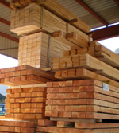

Fundada en 1997 por los Hermanos Madera y llamada en un principio Madero Maderas. La actual empresa conocida hoy en día como Maderas Alpino, ha crecido exponencialmente hasta el día de hoy y convertirse en uno de los mayores líderes del sector. Si desea saber más siga leyendo su verdadera historia..
-- Historia --
Todo comenzó por 1995 en un pueblo de Granada conocido como el Piñar, dos jóvenes húerfanos pasaban el día jugando en el campo y en el monte, porque mucha otra cosa no había allí además de árboles, alguna que otra granja y un par de casas, por lo que pasaban el día divirtiéndose aprendiendo de su tutor, un leñador al que a menudo ayudaban. Este tenía un negocio pero enfermó por 1993 y al poco tiempo cayó. Los jóvenes prometieron a su maestro mejorar y llegar a ser grandes maestros en el arte de la madera. Pasaron 2 años tras el fallecimiento de su maestro cuando empezaron con el negocio, pronto se fue reconociendo su gran habilidad con la madera, un negocio duro, constante, pero del que pronto obtuvieron beneficios, puesto que nadie cortaba, ni trataba la madera mejor que ellos en toda la comunidad. Su fama creció y creció.. Su especiaildad el pino, la mayoría de la gente que no era del pueblo decía, el pino del Piñar ¡Eso sí que es un pino! Pronto los rumores de sus famosos pinos fueron expandiéndose más y más, y cuando era Navidad los beneficios aumentaban en cantidad, esto año tras año. Poco a poco consiguieron fama nacional. En 2003 cambiaron el nombre de la empresa por el actual. En 2007 fueron reconocidos como uno de los líderes del sector. Hoy en día a pesar de hacer encargos a nivel europeo no consiguieron expandir sus límites mucho más allá de las fronteras de su país, pero son reconocidos mundialmente por su lema.. "¡Siempre listos para plantarles el pino!"

Ir arriba